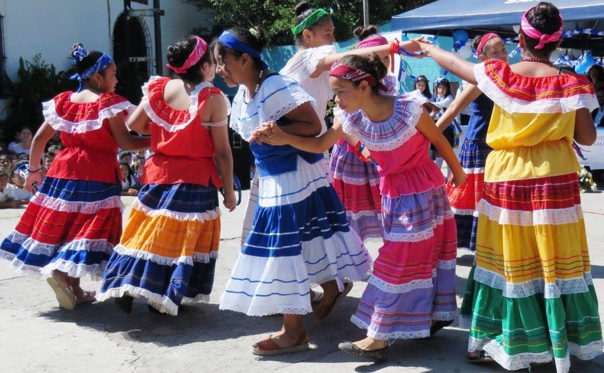

Talleres escolares
A lo largo de nuestra travesia se encuentran pequeños eventos los cuales realiza nuestra institución, entre estos estan los mas comunes que son
El día de la madre
Dia del maestro
Dia de la cruz
dia del estudiante
dia de la independencia
Y muchisimos más dias, y que es mejor que realizar bailes asi se alegra tanto el colegio como los padres de familia y los mismos estudiantes.
